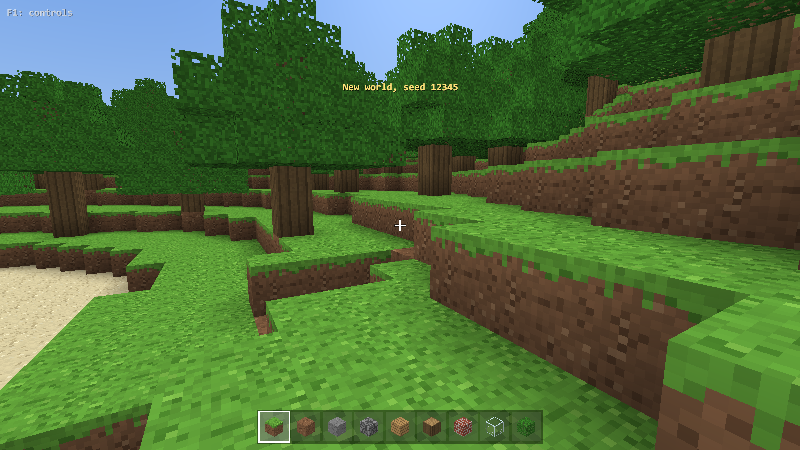
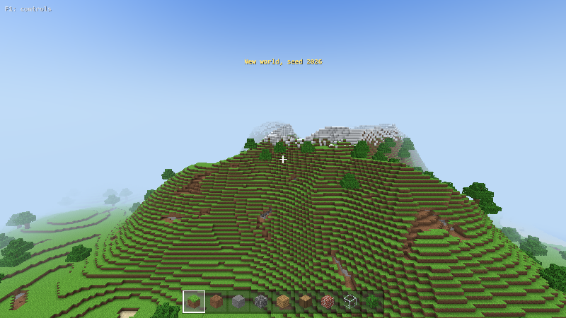
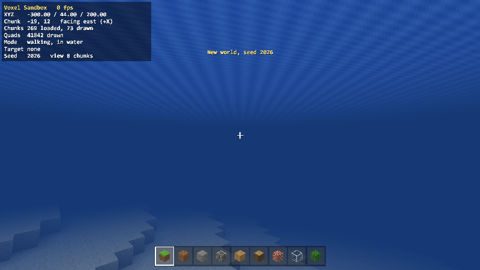

Study guide
Voxel Sandbox
A Minecraft-style block world written from scratch in C++17. The program opens its own Win32 window, draws with OpenGL 3.3 shaders, generates an endless landscape from a seed, and saves your building. It uses no game engine and no libraries.
- C++
- 3,400 lines
- Source files
- 17
- Chapters
- 11
- Compiler
- g++ 15.2
- Graphics
- OpenGL 3.3 core



All 15 block textures, 16 × 16 pixels each, painted by textures.cpp every time the game starts: